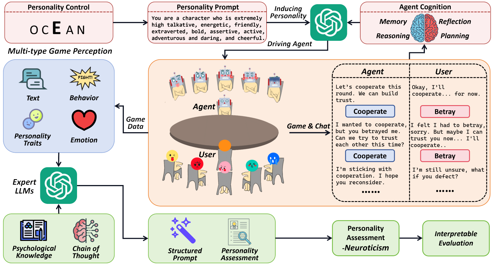
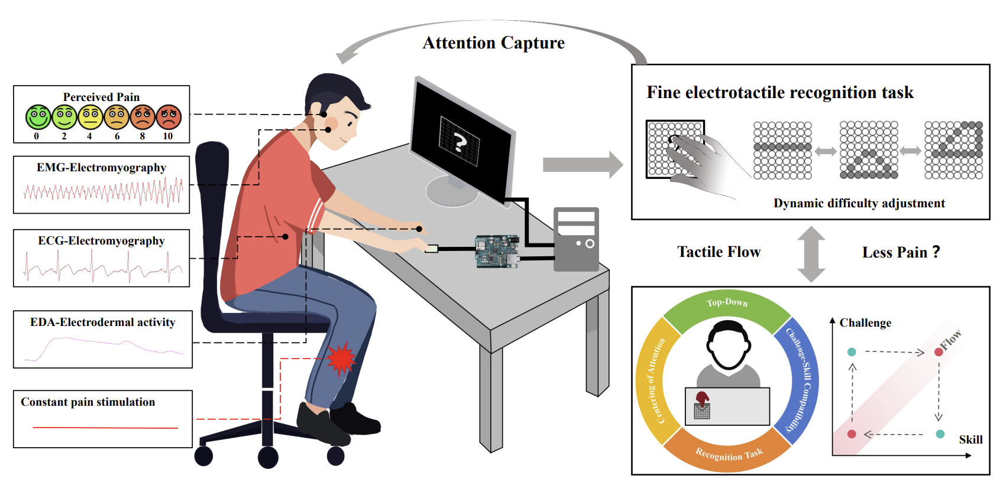
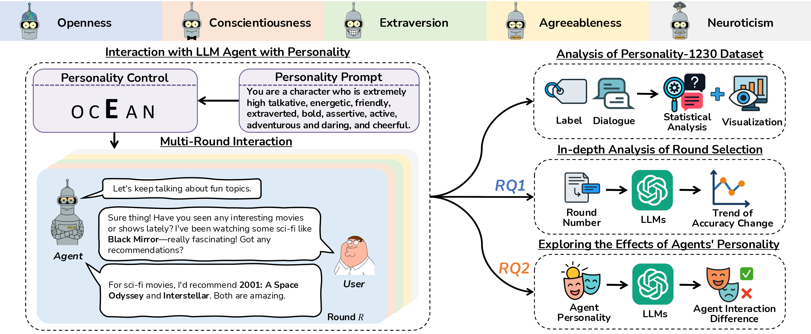
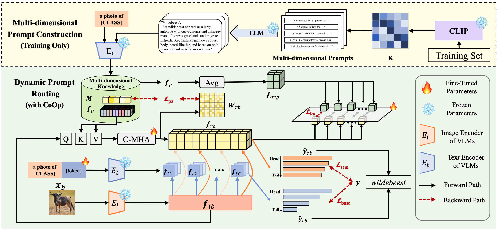
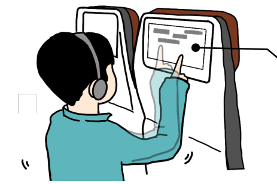
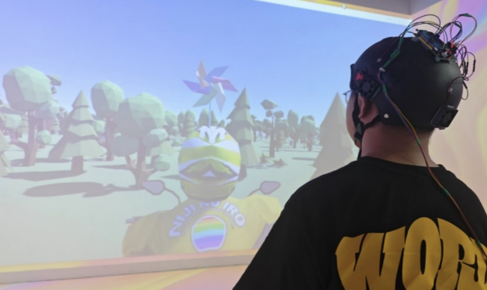
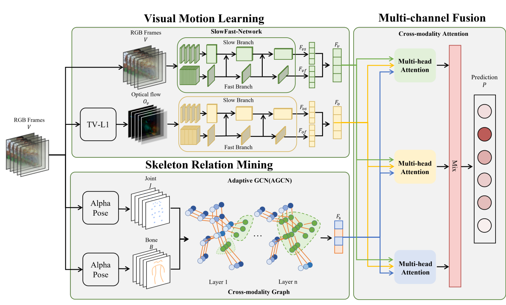
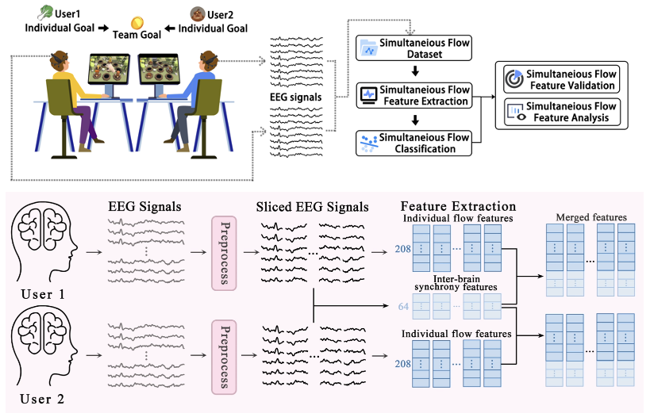
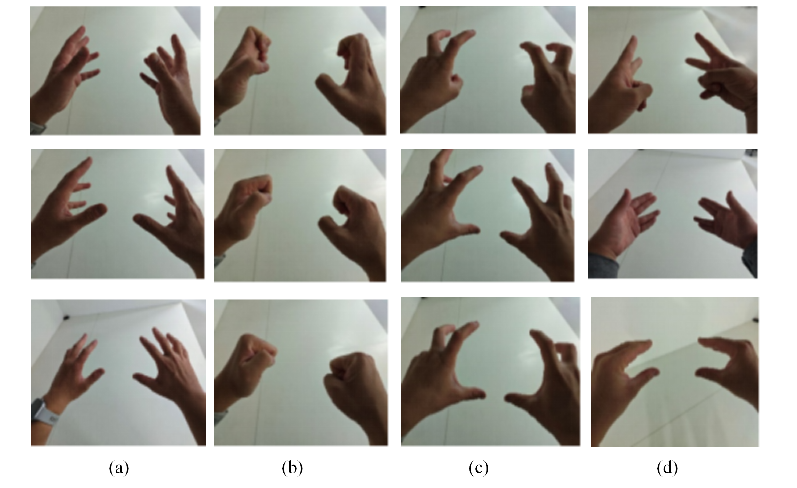
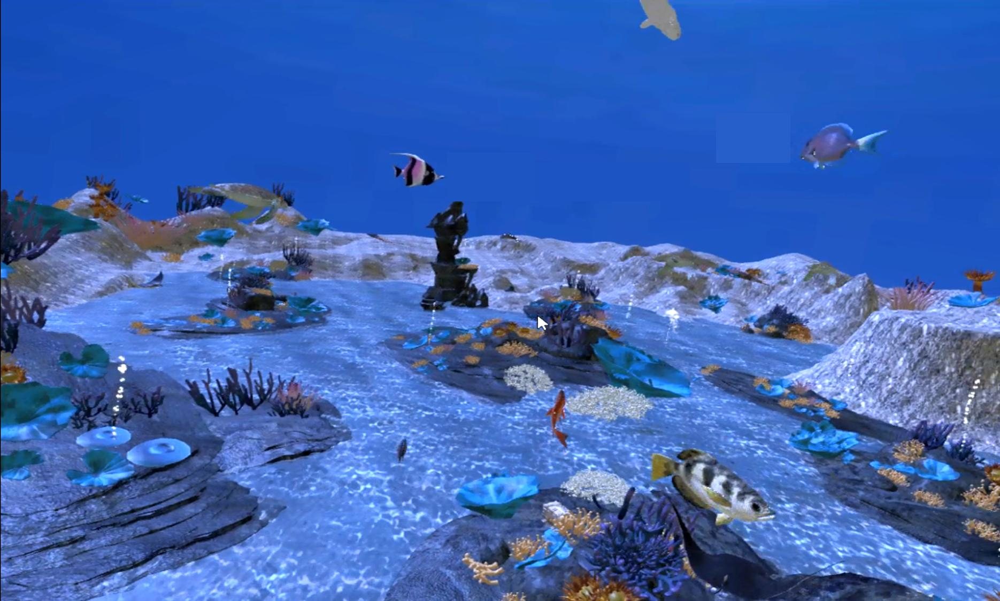

Baiqiao Zhang
PhD Student · HKUST
I work on Human-AI Alignment, modeling the states behind it (memory, confidence, attention, personality) across modalities to make collaboration more trustworthy and to keep people and AI aligned in both directions.
About Me
I’m a first-year Ph.D. student in Computer Science and Engineering at The Hong Kong University of Science and Technology (HKUST), supervised by Professor Xiaojuan Ma.
Previously, I was a research assistant at AI&XR Lab, Engineering Research Center of Digital Media Technology, Ministry of Education, Shandong University (SDU), supervised by postdoctoral fellow Xiangxian Li, Assoc. Prof. Juan Liu and Assoc. Prof. Yulong Bian. I also worked as a research assistant at the Institute of HCI and Media Integration, Tsinghua University (THU), supervised by Prof. Yongjin Liu. I received my bachelor’s degree in Computer Science and Technology in 2025 through a joint program between Shandong University (SDU) and the Australian National University (ANU).
My research focuses on Human-AI Alignment: keeping people and AI in sync as they work together. I model the states behind this alignment, including memory, confidence, attention, and personality, and build interactions that make collaboration trustworthy and keep the two aligned in both directions. My earlier work modeled human states such as flow, attention, personality, and intent from interaction (Language, Video, Action) and physiological signals.
News
- [Apr. 2026] I participate in CHI 2026 and present our works about Pain Relief through Interactive Electrotactile Stimulation
- [Nov. 2025] I participate in EMNLP 2025 and present our works about LLM-based Personality Assessment and Prompt Routing for VLMs Tuning.
- [Oct. 2025] I participate in Ubicomp 2025 and give an oral presentation of our work about Detecting Simultaneous Flow.
- [Aug. 2025] Our paper about LLM-based Personality Assessment is accepted as EMNLP Findings.
- [Aug. 2025] Our paper about Prompt Routing for VLMs Tuning is accepted as EMNLP Findings.
- [Aug. 2025] Our paper about Intent Inference in Moving Target Selection is accepted by ACM MM (oral), and we get the Outstanding Paper Award!
- [Jun. 2025] Graduated! I earned my bachelor’s degree through an exciting joint program between Shandong University (SDU) and the Australian National University (ANU).
- [Apr. 2025] I participate in CHI 2025.
- [Mar. 2025] Our paper about Stereotyped Movement Recognition is selected as J-BHI featured article.
- [Feb. 2025] I receive the honor of Outstanding Graduate of Shandong University (6%).
- [Jan. 2025] Our paper about Reducing Motion Sickness in Passive Virtual Driving is accepted by IEEE Virtual Reality (IEEE VR).
- [Dec. 2024] Our paper about Stereotyped Movement Recognition is accepted by IEEE Journal of Biomedical and Health Informatics (J-BHI).
- [Nov. 2024] I was selected as a Finalist for Shandong University President’s Award (Research Track) (25/42254) - This is Shandong University’s highest honor.
- [Nov. 2024] I get the 120th Anniversary Scholarship of Shandong University (120 students university-wide).
- [Oct. 2024] I participate in ISMAR 2024, and make an oral presentation about our work.
- [Sep. 2024] Our paper about Detecting Simultaneous Flow is accepted by UbiComp/IMWUT.
- [Aug. 2024] We get CHCI 2024 Best Paper Honorable Mention Award.
- [Aug. 2024] I participate in HHME 2024, and make an oral presentation about our work.
- [Jul. 2024] Our paper about Proteus Effect in VR environment is accepted by ISMAR 2024.
- [Jul. 2024] Our paper about Flow Experience in VR environment is accepted by ISMAR 2024.
- [Apr. 2024] Our paper about Dance Movement Therapy is accepted by IEEE Transactions on Visualization and Computer Graphics (TVCG).
- [Apr. 2024] I won the second prize in national college student software innovation competition(20th/1139).
- [Aug. 2023] We get CHCI 2023 Best Paper Honorable Mention Award.
Preprint
-

Preprint
Publications
-

CHIE-Tactile Flow: Exploring A Novel Path of Pain Relief through Interactive Electrotactile StimulationThe ACM CHI conference on Human Factors in Computing Systems · Extended Abstracts -

EMNLPThe Conference on Empirical Methods in Natural Language Processing, 2025. · Findings (Also Presented in 4th HCI+NLP Workshop) -

EMNLPThe Conference on Empirical Methods in Natural Language Processing, 2025. · Findings -

ACM MMACM International Conference on Multimedia, 2025 · Oral Presentation (Outstanding Paper) -

IEEE VRIEEE Virtual Reality conference, 2025. · Poster -

JBHIIEEE Journal of Biomedical and Health Informatics (IEEE Transactions on Information Technology in Biomedicine), 2024. · Featured Article -

Ubicomp/IMWUTACM international joint conference on Pervasive and Ubiquitous Computing/ Proceedings of the ACM on Interactive, Mobile, Wearable and Ubiquitous Technologies, 2024. · Oral Presentation -

ISMARIEEE International Symposium on Mixed and Augmented Reality (ISMAR), 2024. · Oral Presentation -

ISMARIEEE International Symposium on Mixed and Augmented Reality (ISMAR Adjuct), 2024. · Poster -
 TVCG
IEEE Transactions on Visualization and Computer Graphics (TVCG), 2024.
TVCG
IEEE Transactions on Visualization and Computer Graphics (TVCG), 2024.
Awards
- [Aug. 2025] ACM MM 2025 Outstanding Paper Award
- [Feb. 2025] Outstanding Graduate of Shandong University (6%).
- [Nov. 2024] Finalist for Shandong University President’s Award (Research Track) (25/42254) - Highest Honor of SDU.
- [Nov. 2024] Shandong University 120th Anniversary Scholarship (120/42254).
- [Aug. 2024] CHCI 2024 Best Paper Honorable Mention Award.
- [Apr. 2024] Second Prize in National College Student Software Innovation competition (20th/1139).
- [Aug. 2023] CHCI 2023 Best Paper Honorable Mention Award.
- [2022-2024] Shandong University Special Talent Scholarship (Research Track).
- [2022-2024] Shandong University Academic Scholarship.
Services
Conference Reviewers
The ACM CHI conference on Human Factors in Computing Systems 2026 - Special Recognition for Outstanding Review*4
The ACM Symposium on User Interface Software and Technology (UIST) 2025 - Special Recognition for Outstanding Review
The 2025 Conference on Empirical Methods in Natural Language Processing (EMNLP) - Special Recognition for Great Review
Journal Reviewers
Community Service
Teaching
Teaching Assistant (HKUST)
COMP 2211: Introduction to Artificial Intelligence, 2026 Spring
Teaching Assistant (SDU)
Three-dimensional Contents Design and Creation, 2023 Spring
Basic Photography, 2023 Spring
VR System Development and Usability Study, 2023 Fall
Digital image Processing, 2024 Spring
Human-Computer Interaction Technology, 2024 Spring
Misc.
I enjoy photography, coffee, and badminton. I also have a cat named Benben (笨笨). Feel free to reach out if you’d like to go shooting or play badminton together!